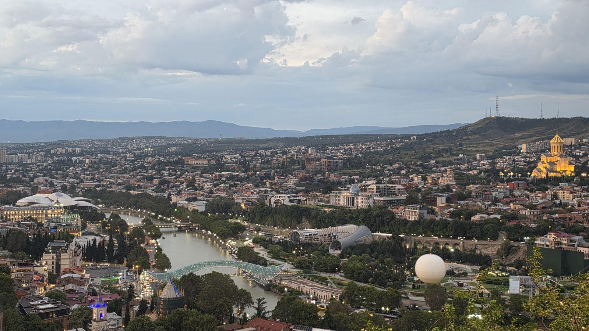
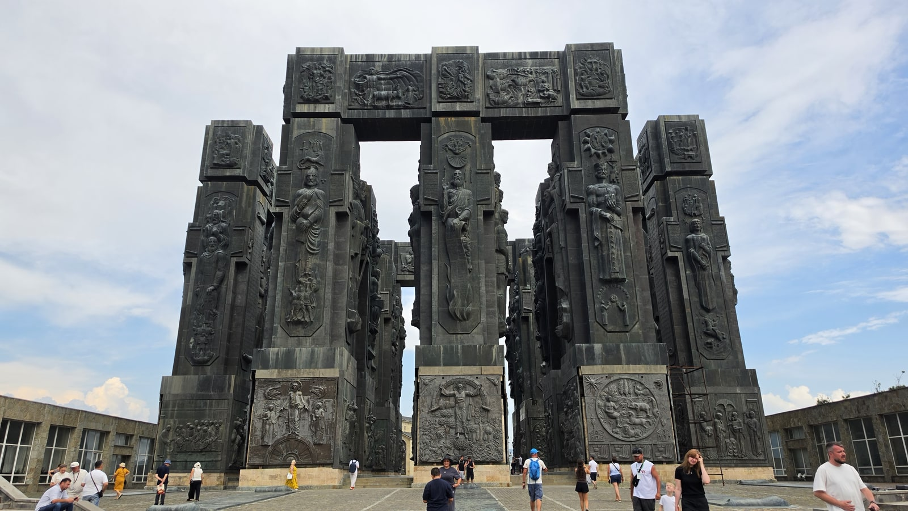
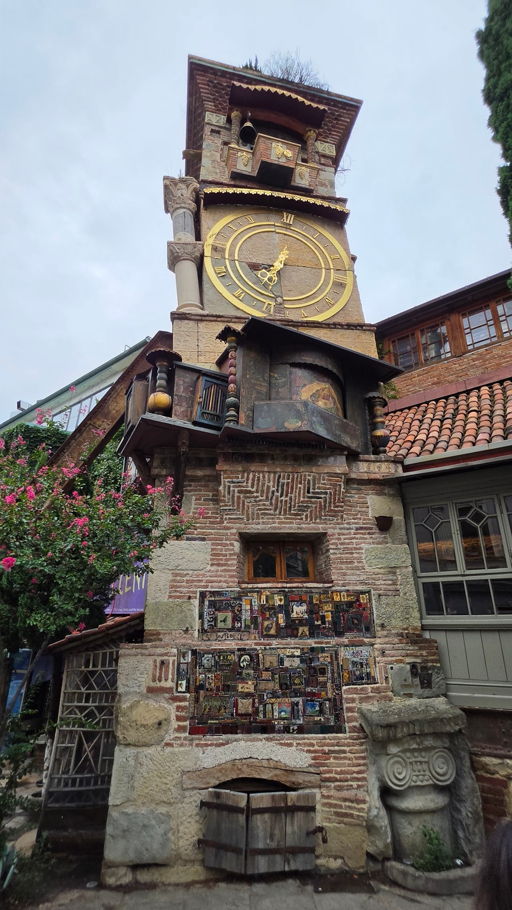
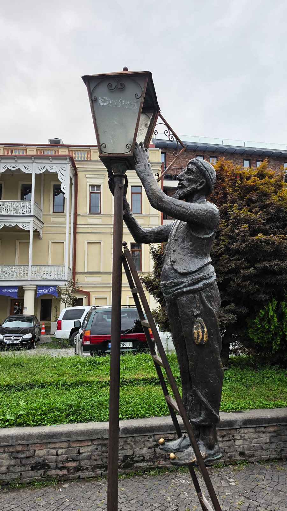
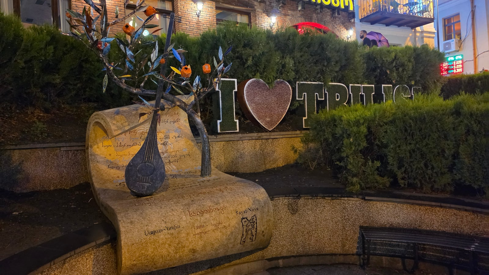
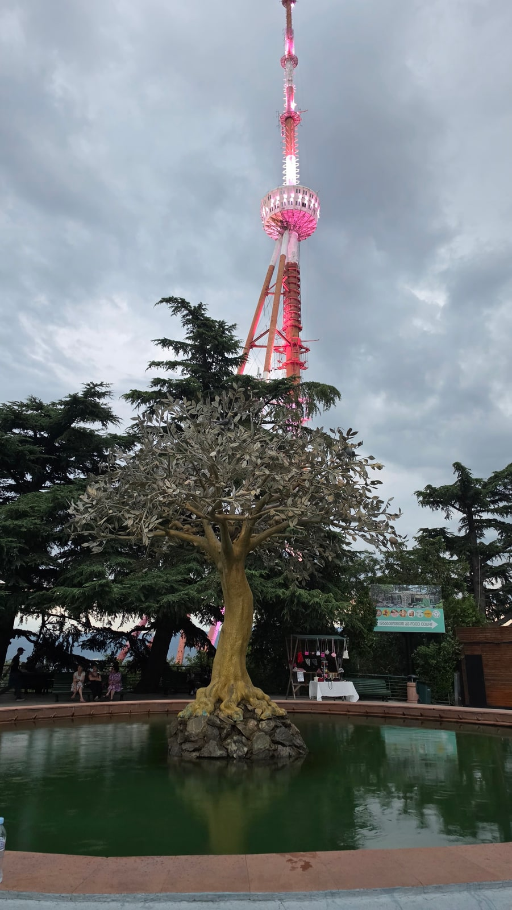

<meta charset="utf-8">
<title>트빌리시 3일 일정 — 시내 이틀 + 근교 하루 — 나의 투자 그리고 행복한 여행</title>
<meta name="description" content="트빌리시 3일 일정 추천: 구시가지와 나리칼라 노을, 시계탑·시장·므타츠민다 야경, 근교 당일 투어 선택 기준.">
<meta name="viewport" content="width=device-width, initial-scale=1">
<link rel="canonical" href="https://worldtraveler1.tistory.com/58">
<link rel="preconnect" href="https://fonts.googleapis.com">
<link rel="preconnect" href="https://fonts.gstatic.com" crossorigin>
<link rel="stylesheet" href="https://fonts.googleapis.com/css2?family=Hahmlet:wght@400;600;800&family=IBM+Plex+Mono:wght@400;500&family=IBM+Plex+Sans+KR:wght@300;400;500;600&display=swap">

<style>
  :root{
    --paper:#F2EEE6;--surface:#FAF8F3;--surface-2:#E7E1D5;
    --ink:#191510;--ink-2:#4A4235;--ink-3:#7D7364;
    --line:#D6CEBF;--line-soft:#E4DDD0;--accent:#B06A15;--accent-bright:#C2761A;
    --up:#E5484D;--down:#3B82F6;
    --f-display:"Hahmlet",'Nanum Myeongjo',"Apple SD Gothic Neo",serif;
    --f-body:"IBM Plex Sans KR","Apple SD Gothic Neo","Malgun Gothic",sans-serif;
    --f-mono:"IBM Plex Mono","SFMono-Regular",Consolas,monospace;
    --pad:clamp(20px,5vw,64px);
  }
  @media (prefers-color-scheme:dark){
    :root:not([data-theme="light"]){
      --paper:#0B1120;--surface:#121A2C;--surface-2:#1A2439;
      --ink:#E9EEF7;--ink-2:#A9B5C9;--ink-3:#72809A;
      --line:#26314A;--line-soft:#1D2739;--accent:#E8A33D;--accent-bright:#F0B45C;
    }
  }
  *{box-sizing:border-box;}
  body{margin:0;background:var(--paper);color:var(--ink);font-family:var(--f-body);
    font-weight:300;font-size:1rem;line-height:1.75;-webkit-font-smoothing:antialiased;}
  a{color:inherit;}
  img{max-width:100%;height:auto;}
  .wrap{max-width:760px;margin:0 auto;padding-inline:var(--pad);}
  .nav{position:sticky;top:0;z-index:20;background:color-mix(in srgb,var(--paper) 88%,transparent);
    backdrop-filter:saturate(180%) blur(12px);border-bottom:1px solid var(--line);}
  .nav-in{display:flex;align-items:center;justify-content:space-between;height:58px;}
  .brand{font-family:var(--f-display);font-weight:600;font-size:1rem;letter-spacing:-.02em;text-decoration:none;}
  .back{font-family:var(--f-mono);font-size:.72rem;color:var(--ink-3);text-decoration:none;}
  .article{padding-block:clamp(40px,7vw,72px) clamp(56px,9vw,96px);}
  .eyebrow{font-family:var(--f-mono);font-size:.68rem;letter-spacing:.16em;text-transform:uppercase;
    color:var(--accent);margin:0 0 14px;}
  h1{font-family:var(--f-display);font-weight:800;font-size:clamp(1.6rem,4.4vw,2.3rem);
    line-height:1.3;letter-spacing:-.03em;margin:0 0 16px;}
  .byline{font-family:var(--f-mono);font-size:.72rem;color:var(--ink-3);
    padding-bottom:24px;border-bottom:1px solid var(--line);margin-bottom:32px;}
  h2{font-family:var(--f-display);font-weight:600;font-size:1.25rem;letter-spacing:-.02em;margin:42px 0 14px;}
  h3{font-family:var(--f-display);font-weight:600;font-size:1.05rem;letter-spacing:-.02em;
    margin:30px 0 10px;padding-top:14px;border-top:1px solid var(--line-soft);}
  h3 .code{font-family:var(--f-mono);font-size:.7rem;font-weight:400;color:var(--ink-3);margin-left:6px;}
  p{margin:0 0 18px;color:var(--ink-2);}
  ul.checks{margin:0 0 18px;padding-left:20px;color:var(--ink-2);}
  ul.checks li{margin-bottom:8px;font-size:.94rem;}
  table{width:100%;border-collapse:collapse;font-size:.88rem;margin-bottom:8px;}
  th{font-family:var(--f-mono);font-size:.66rem;letter-spacing:.06em;text-transform:uppercase;
    color:var(--ink-3);text-align:right;padding:8px 6px;border-bottom:1px solid var(--line);}
  th:first-child{text-align:left;}
  td{padding:10px 6px;border-bottom:1px solid var(--line-soft);color:var(--ink-2);}
  td.num{font-family:var(--f-mono);text-align:right;font-variant-numeric:tabular-nums;}
  td.up{color:var(--up);} td.down{color:var(--down);}
  .scroll{overflow-x:auto;}
  figure{margin:22px 0;}
  figure img{display:block;border-radius:3px;background:var(--surface-2);}
  figcaption{margin-top:8px;font-family:var(--f-mono);font-size:.68rem;color:var(--ink-3);text-align:center;}
  .note{margin-top:34px;padding:16px 18px;border-left:3px solid var(--accent);
    background:var(--surface);border-radius:0 3px 3px 0;}
  .note p{margin:0;font-size:.85rem;color:var(--ink-3);}
  .foot{border-top:1px solid var(--line);background:var(--surface);padding-block:30px 38px;}
  .foot p{margin:0;font-size:.8rem;color:var(--ink-3);}
</style>

<nav class="nav">
  <div class="wrap nav-in">
    <a class="brand" href="../index.html">나의 투자 그리고 행복한 여행</a>
    <a class="back" href="../index.html#stocks">← 시황으로</a>
  </div>
</nav>

<main class="wrap article">
  <p class="eyebrow">Market</p>
  <h1>트빌리시 3일 일정표 — 사진 기록 기반 동선 (2026.8)</h1>
  <p class="byline">여행 · 2026-09-14 기준</p>

  <p>한 줄 요약: 1일차 구시가지·노을(실제 8/13 동선), 2일차 시계탑·시장·므타츠민다 야경(8/15·18·19 방문지 조합), 3일차 근교 투어(카즈베기/카헤티/아르메니아 중 택1).</p>
  <p>시각은 모두 사진 촬영 시각 기준입니다. 2일차는 실제 하루가 아니라 여러 날의 방문지를 묶은 추천안입니다.</p>
  <p>※ 이 글에는 클룩 제휴 링크가 들어 있습니다. 링크를 통해 예약하시면 글쓴이가 일정 수수료를 받을 수 있으며, 예약하시는 가격은 같습니다.</p>
  <figure><figcaption>해 진 직후 언덕에서 본 트빌리시 (2026.8.13 20:13 촬영)</figcaption></figure>
  <h2>3일 일정 한눈에 보기</h2>
  <ul class="checks">
    <li>1일차 — 조지아 연대기 → 구시가지 온천 거리 → 케이블카 → 나리칼라·어머니상 노을 → 평화의 다리 → 자유광장</li>
    <li>2일차 — 시장·하차푸리 → 구시가지 골목(시계탑·청동 조각) → 므타츠민다 야경</li>
    <li>3일차 — 근교 당일 투어: 카즈베기 / 카헤티 / 아르메니아 중 하나</li>
  </ul>
  <div class="note"><p>1일차는 실제로 하루에 걸은 동선입니다. 2일차는 제가 8월 15·18·19일에 나눠서 간 곳을 하루로 묶은 것이라, 실제로 하루에 다 해본 동선은 아닙니다.</p></div>
  <h2>1일차 — 구시가지와 노을 (실제 8월 13일)</h2>
  <figure><figcaption>조지아 연대기 (2026.8.13 15:45 촬영)</figcaption></figure>
  <ul class="checks">
    <li>15:40  조지아 연대기 — 시내 북쪽 외곽, 대중교통 이동</li>
    <li>18:48  아바노투바니 온천 거리 → 18:56 레그바타헤비 폭포</li>
    <li>19:04  메테히 교회 → 19:11 리케 공원 케이블카</li>
    <li>19:26  나리칼라 요새 전망</li>
    <li>20:04  조지아의 어머니상 노을 (이날 일몰 20:04)</li>
    <li>20:27  평화의 다리 야경 → 21:13 자유광장</li>
  </ul>
  <figure><figcaption>노을 속의 조지아의 어머니상 (2026.8.13 20:04 촬영)</figcaption></figure>
  <p>이 날의 핵심은 일몰 한 시간 전쯤 케이블카를 타는 것입니다. 요새 능선을 걸어 어머니상에 닿을 때쯤 해가 집니다. 여름에는 20시 전후, 가을에는 더 빨라집니다.</p>
  <div style="text-align:center;margin:30px 0"><a href="https://danielmoon82.github.io/moon/posts/tbilisi-oneday-course-2026-09-14.html" target="_blank" rel="nofollow sponsored noopener" style="display:inline-block;padding:15px 28px;background:#E34948;color:#fff;font-weight:700;font-size:18px;text-decoration:none;border-radius:8px"><b>▶ 1일차 동선 자세히 보기 (트빌리시 하루 코스)</b></a></div>
  <h2>2일차 — 시장, 골목, 므타츠민다 야경 (여러 날 조합)</h2>
  <p><b>오후 — 시장과 하차푸리.</b> 8월 19일 15시쯤 농산물 시장을 구경하고 16시 33분에 아자룰리 하차푸리를 먹었습니다. 여름 과일이 쌓인 시장은 사진 찍기에도 좋습니다.</p>
  <p><b>(선택) 트빌리시 해.</b> 8월 18일 16시 42분~17시 8분에는 시내 북동쪽의 큰 저수지 '트빌리시 해' 호숫가에 있었습니다. 시내에서 멀어서 2일차에 넣으면 빠듯합니다. 1일차의 조지아 연대기가 이 근처라, 연대기와 함께 묶는 편이 낫습니다.</p>
  <figure><figcaption>구시가지 샤브텔리 거리의 가브리아제 시계탑 (2026.8.15 18:28 촬영)</figcaption></figure>
  <p><b>저녁 — 구시가지 골목.</b> 8월 15일 18시 28분 가브리아제 시계탑, 18시 33분부터 구시가지의 청동 조각들을 봤습니다. 시계탑은 12시와 19시에 탑 위에서 작은 인형 공연이 열린다고 안내돼 있으니, 19시에 맞춰 가면 좋습니다.</p>
  <figure><figcaption>구시가지의 청동 조각 중 하나 (2026.8.15 18:37 촬영)</figcaption></figure>
  <figure><figcaption>저녁의 I love Tbilisi 표지 (2026.8.15 20:18 촬영)</figcaption></figure>
  <p><b>밤 — 므타츠민다.</b> 8월 18일 19시 38분부터 20시 31분까지 므타츠민다에 있었습니다. 시내 서쪽에서 가장 높은 언덕으로 공원과 TV 타워가 있고, 푸니쿨라로 올라갑니다(편도 10라리 + 전용 카드 2라리로 안내됨).</p>
  <figure><figcaption>므타츠민다 공원과 TV 타워 (2026.8.18 19:55 촬영)</figcaption></figure>
  <figure><figcaption>므타츠민다에서 내려다본 트빌리시 야경 (2026.8.18 20:31 촬영)</figcaption></figure>
  <p>1일차 나리칼라가 강 가까이에서 보는 전망이라면, 므타츠민다는 더 높은 곳에서 도시 전체를 내려다보는 야경입니다. 두 곳이 겹치지 않아 이틀에 나눠 넣기 좋습니다.</p>
  <div class="note"><p>추천 순서: 시계탑 19시 공연을 볼지, 므타츠민다 일몰을 볼지 먼저 정하세요. 둘 다 저녁 시간이라 하루에 둘 다 넣으면 빠듯합니다. 저도 서로 다른 날 갔습니다.</p></div>
  <h2>3일차 — 근교 당일 투어, 하나를 고르세요</h2>
  <p>세 개 다 직접 다녀왔습니다. 가격은 제가 클룩에서 결제한 금액입니다(2026년 8월 여행).</p>
  <ul class="checks">
    <li>카즈베기(28,300원) — 산과 성당, 가장 극적인 풍경. 저수지·아나누리·구다우리·게르게티. 산길이 길고 고도가 높습니다</li>
    <li>카헤티(22,400원) — 와인, 수도원, 성곽 마을. 가장 저렴하고 무난합니다. 09시 출발, 시그나기 17시대까지</li>
    <li>아르메니아(118,800원) — 하루에 한 나라 더. 하그파트·세반 호수·예레반. 밤 11시 넘어 귀환, 가장 비싸고 깁니다</li>
  </ul>
  <p>고르는 기준은 이렇습니다.</p>
  <ul class="checks">
    <li>풍경이 우선 — 카즈베기</li>
    <li>편하고 가볍게, 와인에 관심 — 카헤티</li>
    <li>나라 하나를 더 찍고 싶다, 체력에 자신 있다 — 아르메니아</li>
  </ul>
  <p>세 투어 모두 클룩에서 예약했습니다. 제가 예약한 바로 그 상품 페이지입니다.</p>
  <div style="text-align:center;margin:30px 0"><a href="https://affiliate.klook.com/redirect?aid=135164&aff_adid=1430619&k_site=https%3A%2F%2Fwww.klook.com%2Fko%2Factivity%2F107209-tbilisi-kazbegi-gudauri-zhinvali-guided-group-tour%2F" target="_blank" rel="nofollow sponsored noopener" style="display:inline-block;padding:15px 28px;background:#E34948;color:#fff;font-weight:700;font-size:18px;text-decoration:none;border-radius:8px"><b>▶ 클룩 카즈베기 투어 (제휴 링크)</b></a></div>
  <div style="text-align:center;margin:30px 0"><a href="https://affiliate.klook.com/redirect?aid=135164&aff_adid=1430621&k_site=https%3A%2F%2Fwww.klook.com%2Fko%2Factivity%2F141324-kakheti-sighnaghi-city-of-love-bodbe-9-wine-tasting%2F" target="_blank" rel="nofollow sponsored noopener" style="display:inline-block;padding:15px 28px;background:#E34948;color:#fff;font-weight:700;font-size:18px;text-decoration:none;border-radius:8px"><b>▶ 클룩 카헤티 와인 투어 (제휴 링크)</b></a></div>
  <div style="text-align:center;margin:30px 0"><a href="https://affiliate.klook.com/redirect?aid=135164&aff_adid=1430623&k_site=https%3A%2F%2Fwww.klook.com%2Fko%2Factivity%2F141780-discover-armenia-tbilisi-akhpat-dilijan-sevan-yerevan-tbilisi%2F" target="_blank" rel="nofollow sponsored noopener" style="display:inline-block;padding:15px 28px;background:#E34948;color:#fff;font-weight:700;font-size:18px;text-decoration:none;border-radius:8px"><b>▶ 클룩 아르메니아 당일 투어 (제휴 링크)</b></a></div>
  <div style="text-align:center;margin:30px 0"><a href="https://danielmoon82.github.io/moon/posts/kazbegi-daytour-2026-09-14.html" target="_blank" rel="nofollow sponsored noopener" style="display:inline-block;padding:15px 28px;background:#E34948;color:#fff;font-weight:700;font-size:18px;text-decoration:none;border-radius:8px"><b>▶ 카즈베기 투어 기록 보기</b></a></div>
  <div style="text-align:center;margin:30px 0"><a href="https://danielmoon82.github.io/moon/posts/kakheti-wine-tour-2026-09-14.html" target="_blank" rel="nofollow sponsored noopener" style="display:inline-block;padding:15px 28px;background:#E34948;color:#fff;font-weight:700;font-size:18px;text-decoration:none;border-radius:8px"><b>▶ 카헤티 와인 투어 기록 보기</b></a></div>
  <div style="text-align:center;margin:30px 0"><a href="https://danielmoon82.github.io/moon/posts/armenia-daytrip-from-tbilisi-2026-09-14.html" target="_blank" rel="nofollow sponsored noopener" style="display:inline-block;padding:15px 28px;background:#E34948;color:#fff;font-weight:700;font-size:18px;text-decoration:none;border-radius:8px"><b>▶ 아르메니아 당일치기 기록 보기</b></a></div>
  <h2>이 일정을 따라갈 때 알아둘 것</h2>
  <ul class="checks">
    <li>교통 — 교통카드(2라리)에 1일권(3라리)을 넣으면 1·2일차 이동이 해결됩니다. 케이블카·푸니쿨라는 별도 요금</li>
    <li>숙소 — 3일차 투어 출발지까지 이동을 생각하면 지하철역 가까운 곳이 편합니다</li>
    <li>더위 — 8월 트빌리시는 낮에 덥습니다. 1·2일차 모두 오후 늦게 시작하는 구성으로 짰습니다</li>
    <li>신발 — 구시가지와 나리칼라는 돌길과 경사가 많습니다</li>
    <li>여유가 있다면 — 4일 이상이면 투어를 하나 더 넣으세요. 저는 8월 14·16·17일, 세 번 투어를 다녀왔습니다</li>
  </ul>
  <h2>자주 묻는 질문</h2>
  <p><b>트빌리시는 며칠이 적당한가요?</b></p>
  <p>시내만 보려면 2일, 근교 투어 하나를 넣으면 3일이 적당합니다. 투어를 두세 개 넣으려면 4~5일 이상 잡으세요.</p>
  <p><b>2일차 동선은 하루에 가능한가요?</b></p>
  <p>제가 여러 날에 나눠 간 곳을 묶은 것이라 하루에 다 해보지는 않았습니다. 시계탑 19시 공연과 므타츠민다 야경은 둘 다 저녁이라 하나를 고르는 편이 현실적입니다.</p>
  <p><b>3일차 투어는 어떤 게 가장 좋나요?</b></p>
  <p>풍경은 카즈베기, 가성비와 편안함은 카헤티, 한 나라를 더 보는 경험은 아르메니아입니다. 가격은 제가 낸 금액 기준 22,400원~118,800원이었습니다.</p>
  <h2>정리하면</h2>
  <p>트빌리시 3일은 '구시가지 하루, 높은 곳 하루, 근교 하루'로 나누면 겹치는 곳 없이 알차게 짜입니다.</p>
  <p>노을과 야경 시간을 기준으로 역산해서 오후 일정을 넣는 것, 이것만 지키면 나머지는 쉽습니다.</p>
  <div style="text-align:center;margin:30px 0"><a href="https://danielmoon82.github.io/moon/posts/georgia-travel-guide-2026-09-14.html" target="_blank" rel="nofollow sponsored noopener" style="display:inline-block;padding:15px 28px;background:#E34948;color:#fff;font-weight:700;font-size:18px;text-decoration:none;border-radius:8px"><b>▶ 조지아 여행 준비 총정리 보기</b></a></div>
  <p style="font-size:12px;color:#999;line-height:1.6;margin-top:36px">방문 날짜와 시각은 2026년 8월 12~20일 여행 중 찍은 사진의 촬영 시각(조지아 현지 시각)으로 확인했습니다. 요금·운영 정보는 2026년 9월 13~14일에 확인한 공개 정보이며 바뀔 수 있습니다. 원화 환산은 조지아 중앙은행 2026년 8월 14일 환율(1,000원 = 1.8403라리)로 계산한 대략치입니다. 1일차는 실제 하루 동선이며, 2일차는 8월 15·18·19일에 방문한 곳을 묶은 추천안입니다. 투어 금액은 여행자 본인의 결제액입니다.</p>
</main>

<footer class="foot">
  <div class="wrap"><p>나의 투자 그리고 행복한 여행 · 투자 판단의 참고 자료일 뿐, 매수·매도를 권유하지 않습니다.</p></div>
</footer>
